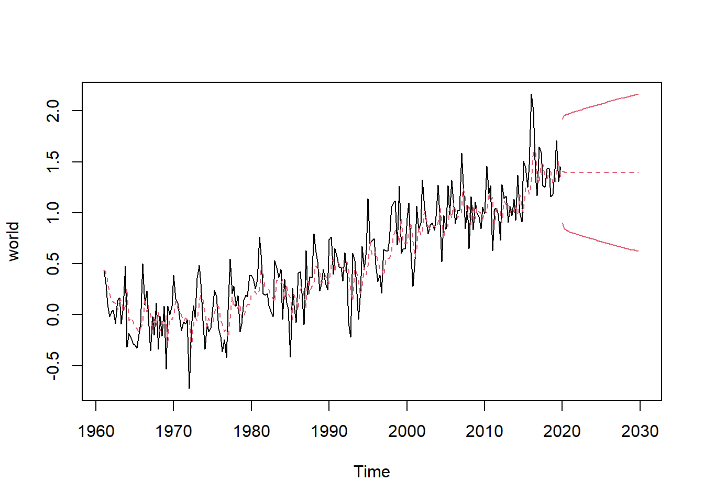

Climate Change Visualizations
Introduction
Climate change has become a clear issue in today’s world, with its significance rising more and more each day, and it’s effects becoming more and more clear. In this project, data of temperature changes in Countries, Continents, and the world as a whole were analyzed and explored to answer the following research questions, how have temperature change trends differed in different areas across the world, and are there significant differences in temperature changes across decades? In this study, I hope to visualize temperature changes across the areas clearly and inspect the different components involved, such as seasonality and the trend of the temperature change. Hopefully, in doing this I can help people to understand the significance of the issue and how bad it really is, if bad at all. This is important due to the rising evidence of the significance of the issue, with temperatures changing rapidly, and acting much differently than in the past, it is clear that something is going on but it’s very hard to understand why, or what it is doing. Visualizing the trends of temperature change, especially from the past, all the way back to the sixties will help people understand what the temperature is actually doing, and reshape the issue in their heads.
Background
The data used in this project comes from a Kaggle dataset containing temperature change data from all across the world, including data on the world, continents, and groups of countries between the years 1961-2020. The analysis used in the dataset includes time series analysis and simple data exploration exploring the values, and years, and finding any relationships or correlations within them. Considering the simplicity of the data, there isn’t much analysis to be done with it but rather a large depth of exploration that is possible. The analysis used in this project is mainly for exploration purposes, dissecting temperature change over time and visualizing the changes and differences that are present, as well as in different areas across the world over time, allowing us to see if there are any consistencies across locations. This research is guided by the principles of climate science and time series analysis. From a climate science perspective, the study is rooted in the understanding of anthropogenic influences on global temperature changes, as articulated in theories such as the greenhouse gas effect and the feedback mechanisms of climate systems. These theories suggest that human activities, particularly fossil fuel combustion and deforestation, contribute to increased concentrations of greenhouse gases, which in turn lead to global warming. Time series analysis provides the statistical tools necessary to examine patterns over time, identify trends, and decompose temperature changes into components such as seasonality, trends, and residuals. The application of these frameworks enables a structured approach to analyzing the data, ensuring that observed patterns are interpreted within the broader context of known climate dynamics and statistical rigor. Despite the extensive body of research on climate change, several gaps remain that this study aims to address:
- Regional Variability: While global temperature trends are well-documented, there is less emphasis on regional or continental differences in temperature change trends. This study provides a comparative analysis of temperature changes across different areas, highlighting spatial disparities.
- Decadal Comparisons: Few studies delve into the differences in temperature change patterns across decades. By examining these changes, this research seeks to identify whether certain periods experienced more rapid temperature shifts and what factors might have contributed.
- Visualization of Trends: Although raw data is often presented, there is a lack of accessible and clear visual representations of how temperature has evolved across different regions and timeframes. This project addresses this by emphasizing visualizations that are intuitive and informative.
Data Cleaning & Preparation
The dataset initially includes 66 columns, with the area and area code, month and month code, element of Standard Deviation or Temperature change, as well as unit column. The rest of the columns hold the data for a single year, from 1961-2019. I started with getting rid of the month and area code columns, as well as the unit and element code, as I will not be using these in the analysis. From here I filtered out the Temperature change data from the element category and then removed that column as it is no longer needed and they are all temperature change. From here, I noticed that there was instances in the Month column that were three months combined, for example “Dec Jan Feb”. These instances correlated to seasons in the specific year. Due to the way it was encoded, it was hard to figure out how to rename these instances, but eventually, it was decided to convert the month’s column from UTF-8 format into ASCII, substituting the Unknown symbol for nothing, leaving us with the example to know equal “DecJanFeb.” From here it was much easier to handle, so I then remapped the instances to their respective season allowing the dataset to appear a lot more clear. From here the data is a lot easier to work on, with a column for area, month, and then the years with the data. I then converted the data into a long format to make it more linear, and easier to plot and compare the different areas to each other. I combined the year columns into two columns, one for the year, and the second for the temperature change values, so now our dataset has the four variables that we need.
Imputation of NA values
From here, the next issue to address was the missing values in the dataset. I kept the original in case I needed to check certain areas or years for NA values, and then imputed the missing values. The method of imputation was to group the data by area, and then by months (time period), and then used the mean of the grouped areas by month to fill in any NA values included. The data was then checked for any remaining NA values, where none were found. It was important to keep the NA data for later analysis, as it was found that certain areas lacked data before 1991 and all the values were imputed with mean, throwing off the analysis.
Subset Creation
Once all the missing values were handled, I created subset datasets for the monthly, seasonal, and yearly data. This will allow me to analyze different aspects using the different data as needed. Due to the sheer size of the dataset, most plots and modeling had to be done on the seasonal data as opposed to the monthly data for clarity.
Exploratory Data Analysis (EDA)
To start the analysis and determine areas most and least volatile across the time period, average temperature change for each area was calculated and stored in a dataframe. To decrease the amount of noise and randomness in the averages, I used the yearly data for this tasks. The data was grouped by areas, calculating the average and max temperature change in the area across the years, this new data was then placed in a dataframe sorted by descending average. This gave me a table that shows the areas and the average temperature change through the years, allowing me to see which areas might be the best to analyze in terms of climate change severity. This was then repeated only using data from the latest 20 years to determine if there is any significant difference from the results obtained using all of the data.
Time Series Decomposition (Selected Areas)
Comparative Visualizations
Global Trend and Forecasting
